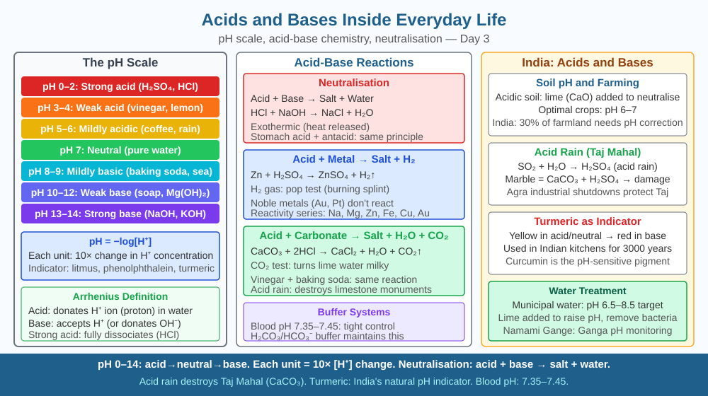

By the end of this lesson, you should be able to define acids and bases in terms of H⁺ and OH⁻ ion release, explain what the pH scale measures, name at least five acids and bases found in Indian kitchens and medicine, and predict what happens to pH when more acid is added to a neutral solution.
Imli (tamarind) tastes sour. Soap feels slippery. Baking soda makes roti rise. Lemon juice preserves pickles. Ant venom burns your skin. Milk curdles when it "turns sour." Every one of these observations involves acids or bases — yet they look nothing alike. What property do all acids share? What property do all bases share? And why does mixing an acid and a base cancel both out?
What is an acid? According to the Arrhenius definition (used at NCERT Class 10 level): an acid is a substance that releases hydrogen ions (H⁺) when dissolved in water. In practice, H⁺ immediately attaches to a water molecule to form a hydronium ion (H₃O⁺).
Example: Hydrochloric acid dissolves completely: HCl → H⁺ + Cl⁻ Acetic acid (vinegar) dissolves partially: CH₃COOH ⇌ CH₃COO⁻ + H⁺
The more H⁺ ions a substance releases per litre of solution, the stronger the acid. HCl is a strong acid — it dissociates almost 100%. Acetic acid is a weak acid — only about 1% of its molecules dissociate at room temperature.
What is a base? A base releases hydroxide ions (OH⁻) in water. Strong bases like sodium hydroxide (NaOH) dissociate completely: NaOH → Na⁺ + OH⁻. Weak bases like ammonia solution (NH₄OH) partially dissociate.
An alkali is a base that is soluble in water. All alkalis are bases, but not all bases are alkalis (e.g., copper oxide is a base but does not dissolve in water).
The pH scale measures the concentration of H⁺ ions in a solution. It runs from 0 to 14: - pH 0–6: Acidic (more H⁺ than OH⁻); lower pH = more acidic - pH 7: Neutral (H⁺ = OH⁻); pure water at 25°C - pH 8–14: Basic/alkaline (more OH⁻ than H⁺); higher pH = more basic
Each whole-number step on the pH scale represents a tenfold difference in H⁺ concentration. So pH 3 is ten times more acidic than pH 4, and one hundred times more acidic than pH 5.
Indicators are substances that change colour at different pH values. Litmus is the most common: red in acid, blue in base. Phenolphthalein is colourless in acid and pink in base. Turmeric (haldi) is a natural indicator — it turns red-brown in strong base and stays yellow in acid or neutral solutions.
Neutralisation — the core reaction: When an acid and a base react, H⁺ from the acid combines with OH⁻ from the base to form water, and the remaining ions form a salt:
HCl + NaOH → NaCl + H₂O
This is called a neutralisation reaction. The result is always a salt and water. The salt may be acidic, basic, or neutral depending on the strengths of the parent acid and base.
Common examples around you: - Lemon juice: pH ≈ 2.2 (citric acid, H⁺ released) - Tomato: pH ≈ 4.2 (citric + malic acids) - Human blood: pH ≈ 7.4 (slightly basic — must be maintained precisely) - Soap (bar): pH ≈ 9–10 (sodium salts of fatty acids, releases OH⁻) - Baking soda: pH ≈ 8.3 (NaHCO₃, weakly basic) - Stomach acid (HCl): pH ≈ 1.5–2
Think of the pH scale as a tug-of-war between H⁺ and OH⁻:
When you add acid to a neutral solution, you add more H⁺. The balance tips toward the acid side, pH drops below 7. When you add a base, you add OH⁻ which neutralises H⁺ ions, tipping the balance the other way. Knowing the mechanism lets you predict exactly which direction pH will move whenever a substance is added.
The included SVG shows a horizontal pH bar from 0 to 14 with a colour gradient (red at 0 → orange → yellow → green at 7 → teal → blue at 14):

Acids and bases govern daily chemistry across India:
Q3 predicted that adding more acid to a neutral solution would push pH below 7 — the solution becomes acidic. Now extend that further:
Human blood must stay between pH 7.35 and 7.45. If it falls below 7.35, the condition is called acidosis — enzymes in the blood denature and oxygen transport by haemoglobin breaks down. The body's first line of defence is the bicarbonate buffer system: HCO₃⁻ ions in the blood absorb extra H⁺: H⁺ + HCO₃⁻ → H₂CO₃ → CO₂ + H₂O. The CO₂ is expelled by breathing faster.
Predict: If a person hyperventilates (breathes very fast) for several minutes, CO₂ is expelled more rapidly than it is produced by metabolism. Using the buffer equation above, predict whether blood pH would rise or fall, and explain why this could cause dizziness.
What property defines an acid according to its behaviour in water?
Correct answer: b
Why is understanding the acid-base mechanism more useful than just knowing pH numbers?
Correct answer: c
What would happen if you added more acid to a neutral salt solution?
Correct answer: c
Explain today's concept to a younger student in 60 seconds without technical jargon. Then explain it again using the correct scientific vocabulary.
If both explanations describe the same mechanism, you have understood the concept rather than memorised it.
The pH of your blood is more tightly controlled than almost any other variable in the body. A change of just 0.4 pH units — from 7.4 to 7.0 or to 7.8 — is life-threatening. Yet you eat acidic foods and produce acidic metabolic waste all day without your blood pH moving significantly. The bicarbonate buffer system, the kidneys, and breathing rate all coordinate to hold blood pH steady to within ±0.05 units. This extraordinary precision is maintained by the same acid-base chemistry you can demonstrate with lemon juice and baking soda in your kitchen.
Acids release H⁺ ions in water (pH below 7) and bases release OH⁻ ions (pH above 7); when they meet, H⁺ and OH⁻ combine to form water and a salt in a neutralisation reaction — the same chemistry that explains why baking soda relieves an ant sting and why lime is added to acidic farmland.